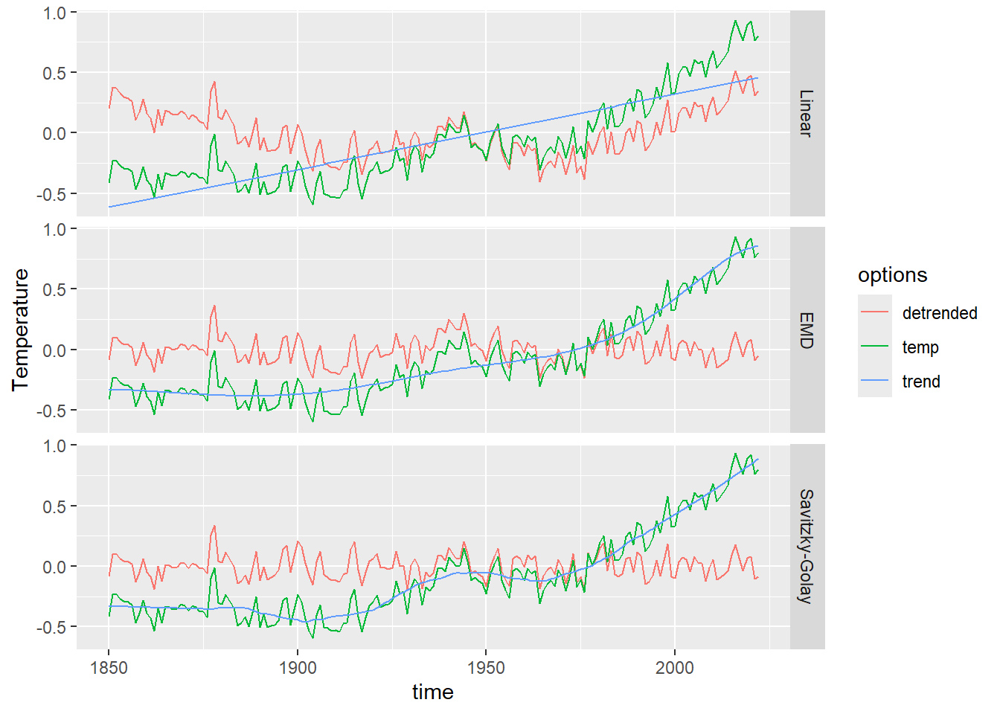

3.3 Detrending
Now let’s move on to detrending. We’ll use the HadCRUT5 global mean surface temperature dataset.
gmst <- read_csv("https://github.com/LinkedEarth/Pyleoclim_util/raw/master/pyleoclim/data/HadCRUT.5.0.1.0.analysis.summary_series.global.annual.csv") %>%
select(time = Time,temp = `Anomaly (deg C)`)
ggplot(gmst, aes(x = time, y = temp)) +
geom_line() +
labs(x = 'Time [year C.E.]', y = 'GMST [°C]')
3.3.1 Detrending methods in R
Let’s apply 3 methods: linear detrending, Empirical Mode Decomposition (EMD), and Savitzky-Golay filter:
# Linear detrending
gmstLinear <- gmst
gmstLinear$detrended <- pracma::detrend(gmstLinear$temp)
gmstLinear$trend <- gmstLinear$temp - gmstLinear$detrended
gmstLinear$method <- "Linear"
# EMD using the EMD package
library(EMD)
emd_result <- emd(gmst$temp, boundary='symmetric', max.imf=4)
gmstEmd <- gmst
gmstEmd$detrended <- gmst$temp-emd_result$residue
gmstEmd$trend <- gmstEmd$temp - gmstEmd$detrended
gmstEmd$method <- "EMD"
# Savitzky-Golay filter
gmstSg <- gmst
gmstSg$trend <- signal::sgolayfilt(gmst$temp, p = 3, n = 51)
gmstSg$detrended <- gmst$temp - gmstSg$trend
gmstSg$method <- "Savitzky-Golay"
#prepare the data for plotting
gmstToPlot <- dplyr::bind_rows(gmstLinear,gmstEmd,gmstSg) %>%
tidyr::pivot_longer(cols = -c(time,method),values_to = "Temperature",names_to = "options") %>%
mutate(method = factor(method,levels = c("Linear","EMD","Savitzky-Golay")))
# Plot it!
ggplot(gmstToPlot) +
geom_line(aes(x = time, y = Temperature, color = options)) +
facet_grid(method ~ .)
The linear trend here does a decent job at capturing first-order behavior. The EMD (approximated by SSA) and Savitzky-Golay methods also capture the nonlinear trend.
3.3.2 SSA detrending
Another option to isolate a non-linear trend is Singular Spectrum Analysis (SSA). If there is a prominent trend, it is often the first mode coming out of that analysis.

The first mode accounts for most fraction of the variance. Let’s compute this:
## [1] "55%"Let’s use this mode as the trend:
ssa_trend <- reconstruct(gmst_ssa, groups = list(trend = 1))
gmst_ssa_dtd <- data.frame(time = gmst$time, temp = gmst$temp - ssa_trend$trend)
ggplot(gmst, aes(x = time, y = temp)) +
geom_line() +
geom_line(aes(y = ssa_trend$trend, color = "SSA trend"), alpha = 0.8) +
geom_line(aes(y = gmst_ssa_dtd$temp, color = "SSA detrended"), alpha = 0.8) +
labs(x = 'Time [year C.E.]', y = 'GMST [°C]', color = '')
This pre-processing allows us to better isolate oscillatory behavior. To see this, let’s look at the spectra of the original and detrended versions:
library(astrochron)
mtmOrig <- astrochron::mtm(dat = gmst,output = 1,verbose = F,genplot = F) %>%
select(Frequency,Power) %>%
mutate(data = "Original",
period = (1/Frequency))
mtmSSA <- astrochron::mtm(dat = gmst_ssa_dtd,output = 1,verbose = F,genplot = F) %>%
select(Frequency,Power) %>%
mutate(data = "SSA-detrended",
period = (1/Frequency))
library(scales)
reverselog_trans <- function(base = exp(1)) {
trans <- function(x) -log(x, base)
inv <- function(x) base^(-x)
trans_new(paste0("reverselog-", format(base)), trans, inv,
log_breaks(base = base),
domain = c(1e-100, Inf))
}
bind_rows(mtmOrig,mtmSSA) %>%
ggplot() +
geom_line(aes(x = period,y = Power)) +
scale_x_continuous(trans = reverselog_trans(10),breaks = c(100,50,20,10,5,2),limits = c(100,2)) +
scale_y_log10() +
facet_grid(data ~ .)
We see that detrending has removed much of the variability at scales longer than ~30y, allowing us to hone in on various peaks near 3.5, 6, 10, and 20 years. To see if those are significant, however, you would need to apply a significance test, which we would cover in another tutorial.